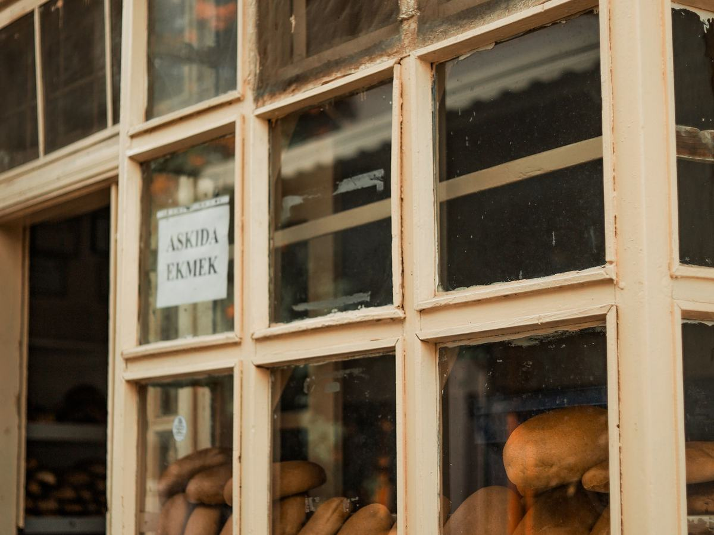
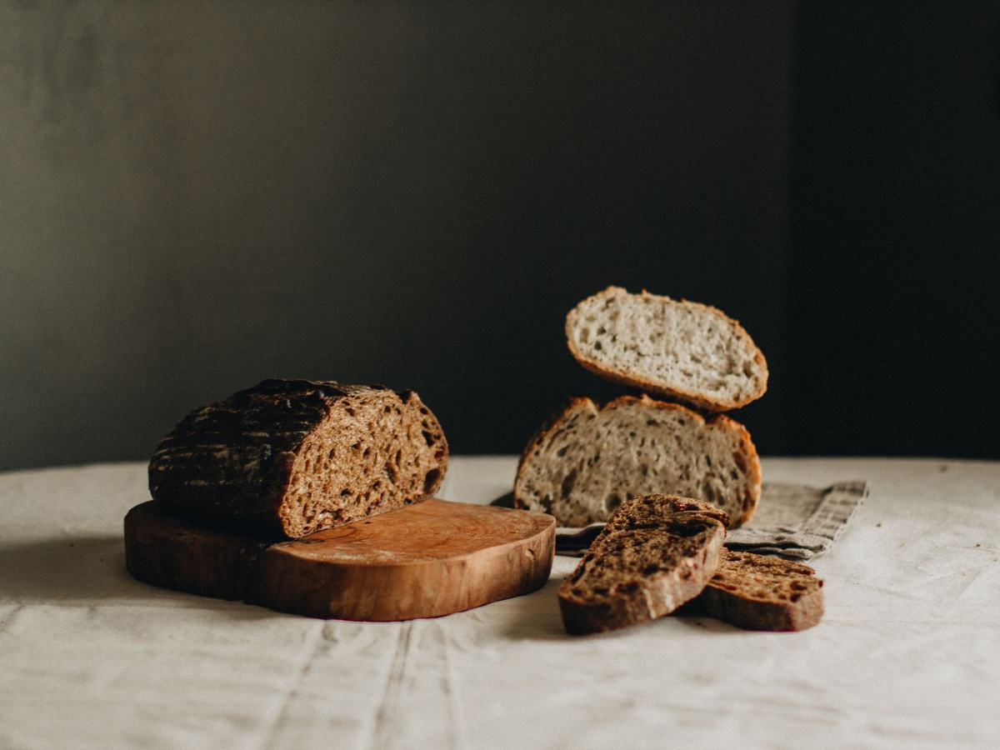
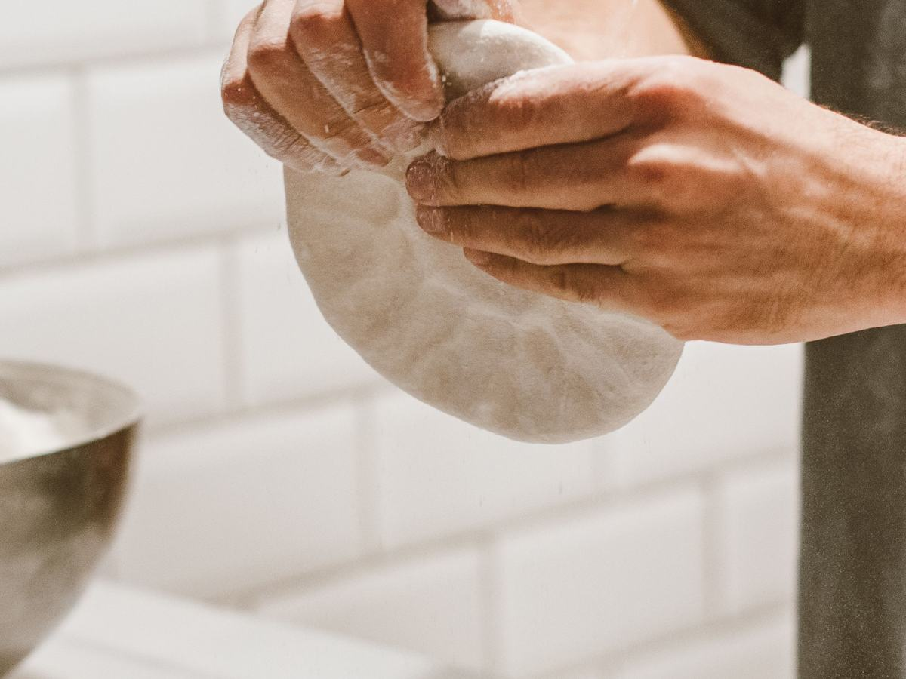
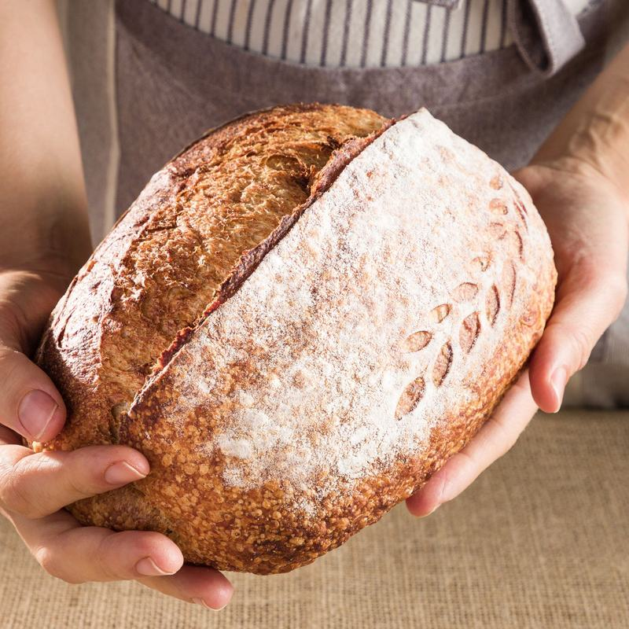
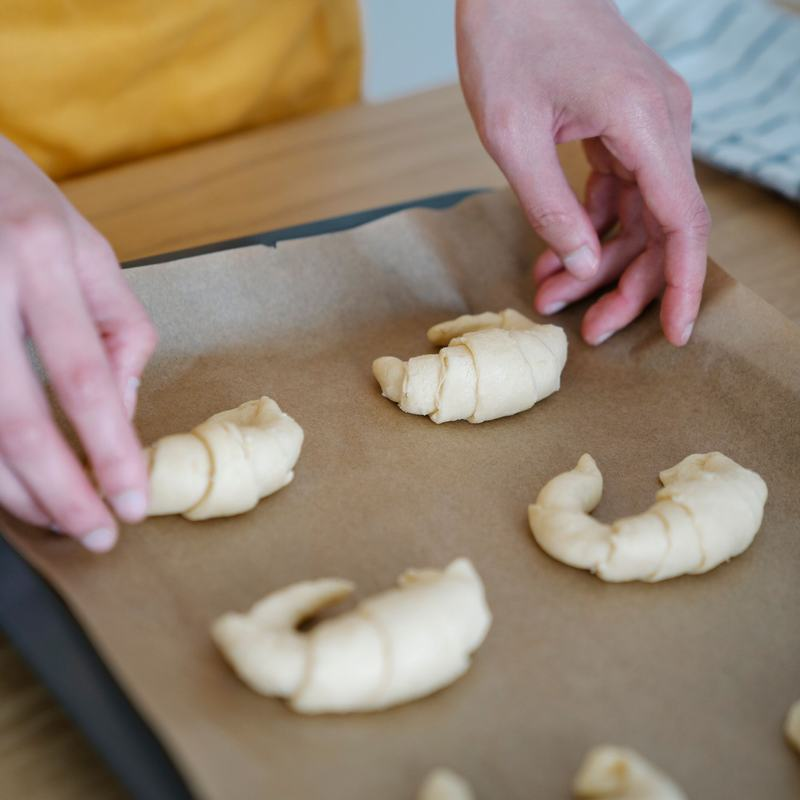
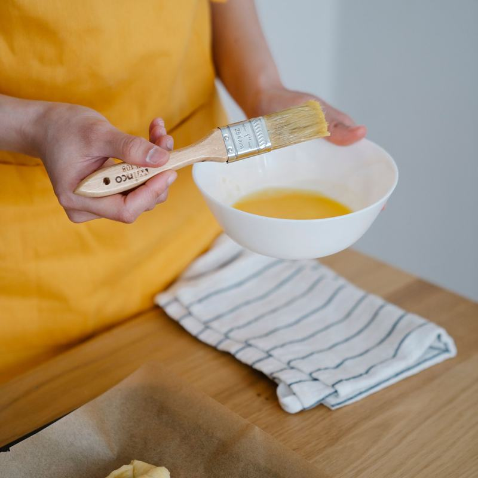
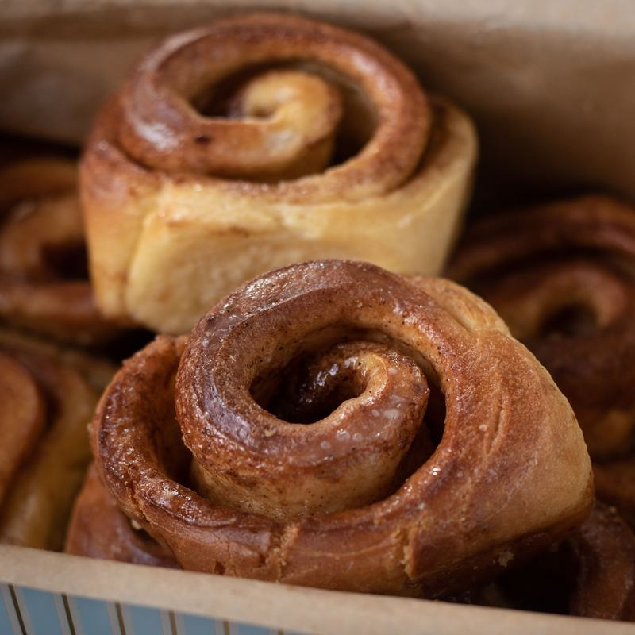
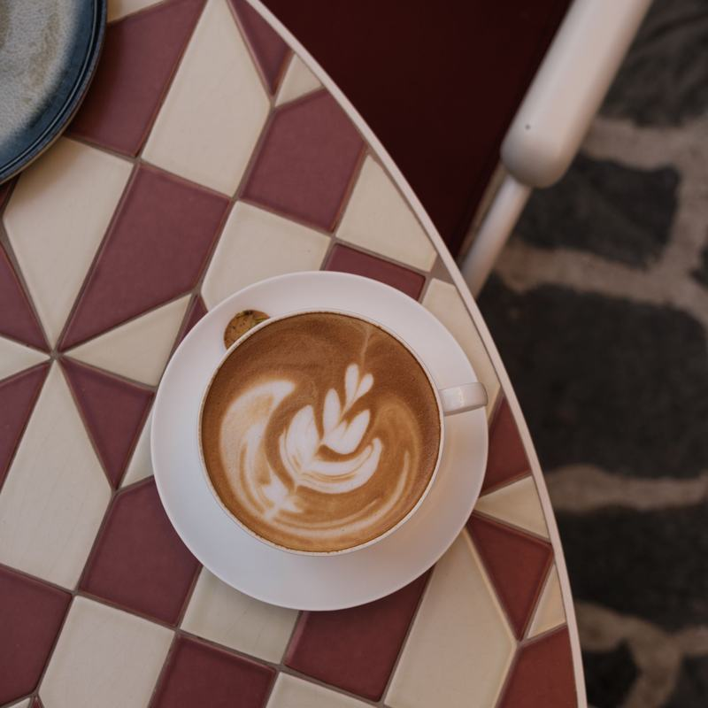

Our Story
How a single copper mixing bowl turned into a bakery the whole neighborhood calls home.
Where It All Began
The Copper Loaf Bakery started in a kitchen far too small for the ambition inside it. It began with one battered copper mixing bowl, inherited and dented, and a recipe for rye bread scrawled in fading pencil on the back of an envelope. That bowl still sits on our shelf today, more decoration than tool now, but it's the reason for our name and the heart of everything we bake.
What started as weekend loaves sold from a fold-out table grew, slowly and stubbornly, into two working bakeries. We never rushed it. Bread doesn't rush, and neither did we. Every step, from sourcing our flour to training our bakers, has been built around one question: does this make the bread better? If the answer was no, we didn't do it.
Today, The Copper Loaf Bakery is a gathering place as much as a bakery. It's where regulars know exactly which shelf holds the last cinnamon roll, where birthdays are planned over the counter, and where the ovens are lit before the streetlights turn off.

Our Mission
We exist to slow food back down. In a world of shortcuts, we proof our doughs for a full day, we laminate our pastry by hand, and we taste everything twice before it ever reaches a customer. We believe good bread and honest cake can hold a community together, one shared slice at a time.
We're committed to sourcing responsibly, baking in small batches so nothing sits stale on a shelf, and treating every custom order, whether it's a wedding cake or a Tuesday loaf, with the same care and attention.

Meet Our Head Baker
Elena Marsh
Elena has flour in her blood, quite literally, having grown up in her grandmother's bakery in a village where the whole street smelled like baking bread by 6 a.m. She trained in classical French pâtisserie before returning home to open The Copper Loaf Bakery, determined to blend old-world technique with the warmth of a neighborhood spot.
"I don't bake to impress anyone," Elena says. "I bake so that when you bite into something we've made, you feel like someone thought about you while they made it. That's the whole job."
Today, Elena leads a small team of bakers who arrive before dawn to mix, shape, and bake every single item by hand. She still tastes every new recipe herself before it makes it onto the menu, and she still keeps that original copper bowl close by, just in case it's listening.

Inside the Bakery
A peek behind the counter, from the first shaping of the morning to the last coffee of the day.




